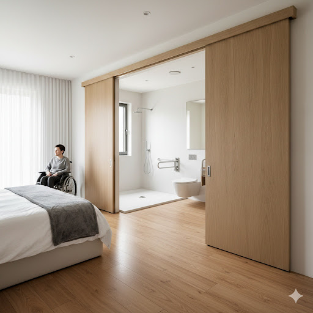
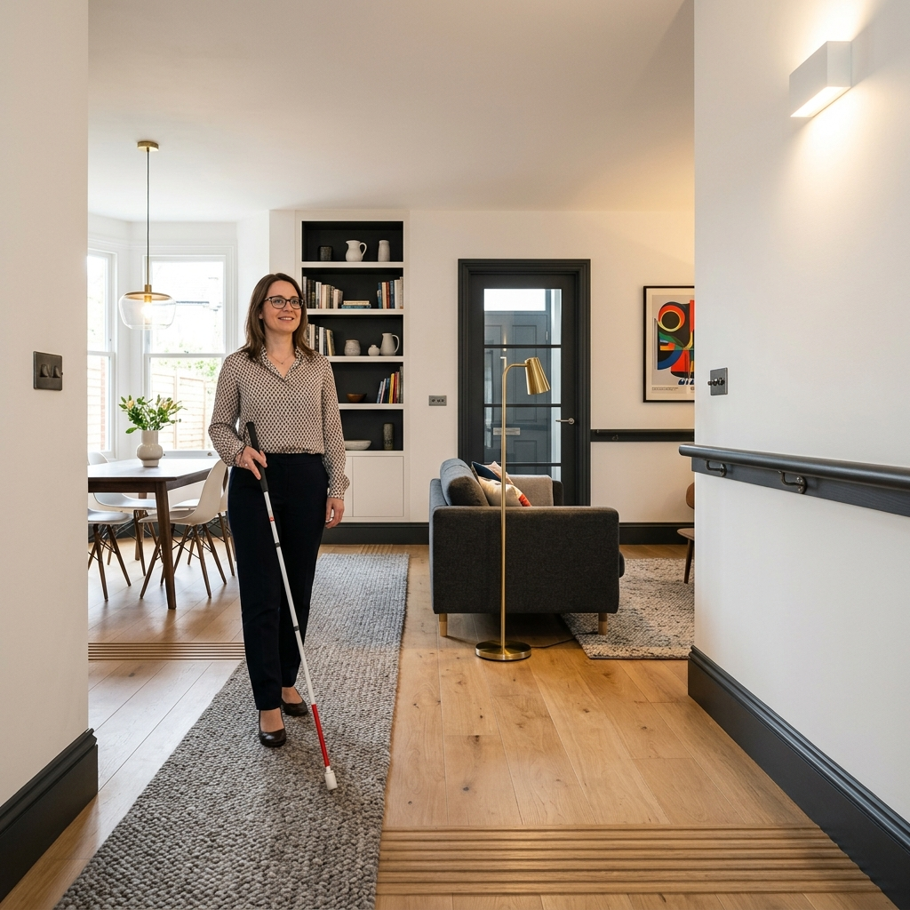

.png)
Espaços sem
Barreiras
"Transformar o lugar para libertar a vida."
Design Inclusivo como Padrão de Luxo.
Olá, sou a Cristiana Azevedo. Acredito que o design de uma casa só é verdadeiramente bom quando não deixa ninguém de fora.
No projeto Espaços sem Barreiras, traduzimos a legislação para o mundo do design, mostrando que a acessibilidade é, acima de tudo, a forma mais elevada de conforto. Uma casa adaptada deve ser uma casa de revista: sofisticada, luminosa e profundamente acolhedora.
.png)
Divisões Inclusivas
Casos Práticos e Soluções Técnicas

I. Cozinhas Inclusivas
O foco principal é a autonomia na preparação de alimentos para utilizadores em cadeira de rodas.
-
Áreas de Trabalho: Bancadas com altura regulável ou espaço livre inferior (mínimo 70cm de altura).
II. Casas de Banho Adaptadas
A segurança e a transferência são as palavras-chave, aliadas à Precisão Level Zero.
- Zona de Banho: Chuveiro ao nível do pavimento com banco de apoio rebatível.


III. Salas e Áreas de Convívio
O foco principal é a fluidez do movimento, eliminando barreiras silenciosas.
-
Canais de Passagem: Portas com largura útil de 0,80m e ausência de tapetes soltos.
IV. Quartos de Dormir
Privacidade e funcionalidade unem-se para criar um ambiente de descanso inclusivo.
- Espaço Lateral: Pelo menos um dos lados da cama deve ter 1,20m de largura livre.

Para Além do Espaço Físico
A verdadeira acessibilidade engloba as necessidades sensoriais e cognitivas.

Ambientes desenhados para a orientação espacial através de pistas táteis e visuais de alto contraste.
- Contraste Cromático: Utilização estratégica de contraste entre paredes, portas e rodapés.
- Sinalética em Braille: Identificação tátil nas portas e elementos funcionais.
- Piso Podotátil: Texturas integradas no pavimento para aviso de escadas ou mudanças de nível.
A comunicação e os alertas sonoros são traduzidos em estímulos visuais e táteis na habitação.
- Avisadores Luminosos: Campainhas, alarmes de incêndio e sensores associados a flashes de luz (Smart Home).
- Isolamento Acústico: Tratamento sonoro focado em evitar eco e reverberação excessiva.

.png)
O espaço funciona como um facilitador de rotinas, reduzindo a ansiedade através da previsibilidade e organização visual rigorosa.
- Painéis Visuais (Visual Boards): Listas de tarefas e rotinas diárias com ícones para fácil compreensão.
- Sinalética por Pictogramas: Etiquetas claras nos armários (Ex: "Clothes", "Shoes") para autonomia na arrumação.
- Zonas de Respiro (Sensory Corner): Espaços dedicados à calma e regulação sensorial.
O Guia Prático da Empatia
A verdadeira acessibilidade vai além das normas; trata-se de sentir e compreender o espaço.
Visão
Percorrer o espaço de olhos vendados revela a importância crítica do contraste cromático e da iluminação sem reflexos.
Audição
O isolamento acústico e avisadores luminosos garantem que nenhum alerta importante seja ignorado num ambiente silencioso.
Intelecto
Reduzir o ruído visual e usar sinalética intuitiva diminui a carga cognitiva, promovendo calma e independência.
"Se eu retirasse um dos meus sentidos, como é que este espaço me ajudaria a sentir seguro e independente?"